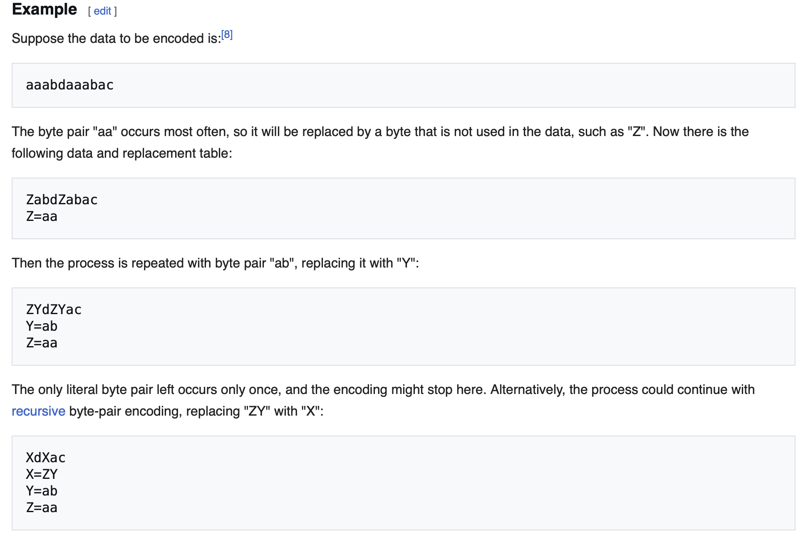

Byte Pair Encoding
Text in Python is an immutable sequence of unicode code points — each character maps to a unique integer. Unicode covers ~300k characters, defining which integer represents each one.
To look up the integer for a character, use ord():
Output:
To convert a string to bytes, we start with a string:
Output:
To convert a string into bytes we use .encode():
Output:
This returns a bytes object. To get the individual integer ids for each byte, we wrap it with list():
Output:
[84, 104, 105, 115, 32, 105, 115, 32, 97, 110, 32, 101, 120, 97, 109, 112, 108, 101, 32, 115, 116, 114, 105, 110, 103]
Why can't we natively use these unicodes? Character level tokenization would be a valid approach, but there are ~300k unique characters defined. Since each character gets a token id, the input sequence is as long as the character count — making the attention mechanism computationally expensive on large sequences and forcing shorter context lengths.
print("Number of characters in sequence: \t", len(test_string))
print("Number of tokenids in sequence: \t", len((list(test_string.encode("utf-8")))))
Output:
BPE Algorithm
For every iteration:
- Identify the most common pair
- Assign new id to the pair. Store this in a look up table
- Replace all occurrences of these pairs with the new id
- Do this till you reach the desired vocab size
Decoding
To restore the original text, look up each id in the look up table to get its byte sequence, concatenate all byte sequences, then decode the result as UTF-8

BPE Implementation Walkthrough
The implementation has three layers: pre-tokenization splits raw text into chunks, two helper functions (get_stats and merge) do the heavy lifting, and the BPE class ties everything together with train(), encode(), and decode().
Pre-tokenization
Before BPE runs, raw text is split into chunks using a regex pattern. This ensures that merges happen only within letter or digit runs, and that whitespace and punctuation are not folded into the merges.
The pattern is a sequence of | alternatives tried left to right:
| Alternative | Matches |
|---|---|
'(?:[sdmt]\|ll\|ve\|re) |
Contractions: 's, 't, 'll, 've, 're, 'd, 'm |
?\p{L}+ |
Optional space + one or more Unicode letters |
?\p{N}+ |
Optional space + one or more Unicode digits |
?[^\s\p{L}\p{N}]+ |
Optional space + punctuation/symbols |
\s+(?!\S) |
Trailing whitespace (not followed by non-whitespace) |
\s+ |
Any remaining whitespace |
With pre-tokenization in place, the two helper functions that drive both training and encoding are get_stats and merge.
get_stats
def get_stats(ids: list[int], counts: dict[tuple[int, int], int] | None = None) -> dict[tuple[int, int], int]:
counts = {} if counts is None else counts
for id0, id1 in zip(ids, ids[1:]):
counts[(id0, id1)] = counts.get((id0, id1), 0) + 1
return counts
Counts how often each adjacent pair of token ids appears. The optional counts argument allows accumulating stats across multiple chunks without creating a new dict each time — used in train() to aggregate stats across all chunks in one pass.
merge
def merge(ids: list[int], pair: tuple[int, int], idx: int) -> list[int]:
i = 0
newids = []
while i < len(ids):
if i + 1 < len(ids) and pair[0] == ids[i] and pair[1] == ids[i+1]:
newids.append(idx)
i += 2
else:
newids.append(ids[i])
i += 1
return newids
Replaces every occurrence of pair in ids with idx. Walks through the list once — when a match is found, appends the new id and skips two positions; otherwise appends the original and advances one.
Pre-tokenization
chunks = []
for special_chunk in special_chunks:
if special_chunk in special_bank:
chunks += [special_chunk]
else:
chunks += re.findall(PAT, special_chunk)
Non-special chunks are further split by PAT. The result is a flat list where each element is either a special token string or a regex-matched word/punctuation chunk.
Converting to ids
ids = []
for ch in chunks:
if ch not in special_bank:
ids.append(list(ch.encode("utf-8")))
else:
ids.append([256 + special_bank[ch]])
ids is a list of lists — each inner list is one chunk's token ids. Regular chunks start as raw UTF-8 bytes (integers 0–255). Special tokens get their pre-assigned id directly.
The merge loop
for n in range(num_merges):
stats = {}
for id in ids:
get_stats(id, stats)
pair = max(stats, key=lambda x: (stats.get(x), vocab[x[0]], vocab[x[1]]))
idx = 256 + len(special_tokens) + n
ids = [merge(id, pair, idx) for id in ids]
merges[pair] = idx
vocab[idx] = vocab[pair[0]] + vocab[pair[1]]
Each iteration:
1. Counts all adjacent pairs across all chunks
2. Picks the most frequent pair — ties broken lexicographically on the byte representations
3. Assigns the next available id (256 + len(special_tokens) + n)
4. Replaces the pair in every chunk
5. Records the merge and adds the new token to the vocab
BPE._encode_chunk()
def _encode_chunk(self, byt: bytes) -> list[int]:
ids = [self.inverse_vocab[bytes([b])] for b in byt]
while len(ids) >= 2:
stats = get_stats(ids)
pair = min(stats, key=lambda p: self.merges.get(p, float("inf")))
if pair not in self.merges:
break
idx = self.merges[pair]
ids = merge(ids, pair, idx)
return ids
Encodes a single pre-tokenized chunk. Two things to note:
bytes([b])— iterating over abytesobject gives integers, not single-bytebytes, so each integer must be rewrapped before looking it up ininverse_vocabmin(..., key=lambda p: self.merges.get(p, float("inf")))— finds the pair with the lowest merge index, i.e. the merge learned earliest during training. Merges must be applied in training order, otherwise the same text could tokenize differently than it did during training. Pairs not inmergesgetinfand are never selected.
BPE.encode()
def encode(self, text: str) -> list[int]:
if self.special_tokens:
special_pattern = "(" + "|".join(re.escape(k) for k in sorted(self.special_tokens, key=lambda x: -len(x))) + ")"
special_chunks = re.split(special_pattern, text)
special_bank = {special_token: i for i, special_token in enumerate(self.special_tokens)}
else:
special_chunks = [text]
special_bank = {}
encoding = []
for chunk in special_chunks:
if chunk in special_bank:
encoding.append(self.inverse_special_tokens[chunk.encode("utf-8")])
else:
encoding.extend(self._encode_ordinary(chunk))
return encoding
Mirrors the structure of train(). Special tokens are split out first — sorted by descending length so longer tokens (e.g. <|endoftext|>) are matched before any shorter prefix. Each non-special chunk is encoded via _encode_ordinary, which applies PAT splitting then _encode_chunk on each piece.
BPE.decode()
def decode(self, ids: list[int]) -> str:
part_bytes = []
for id in ids:
part_bytes.append(self.vocab[id])
text_bytes = b"".join(part_bytes)
return text_bytes.decode("utf-8", errors='replace')
Each id maps directly to its byte sequence via vocab. Concatenating all byte sequences and decoding as UTF-8 recovers the original text. errors='replace' handles cases where merging byte fragments produces invalid UTF-8 at chunk boundaries.
References
- Understanding Tokens — Microsoft
- BPE From Scratch — Sebastian Raschka
- minBPE — Andrej Karpathy
- Stanford CS336 Assignment 1
- Byte-Pair Encoding — Wikipedia
Full Implementation
Source: cs336_basics/tokenizer.py
import regex as re
from collections.abc import Iterable, Iterator
# The net effect: words, numbers, punctuation, and contractions each become separate chunks before BPE sees them, so the merge algorithm can't
# create tokens that span across e.g. a word and a punctuation mark. This is why \p{L} and \p{N} require the regex library rather than stdlib
# re — they're Unicode property classes.
PAT = r"""'(?:[sdmt]|ll|ve|re)| ?\p{L}+| ?\p{N}+| ?[^\s\p{L}\p{N}]+|\s+(?!\S)|\s+"""
def get_stats(ids: list[int], counts: dict[tuple[int, int], int] | None = None) -> dict[tuple[int, int], int]:
"""
Count adjacent token pair frequencies in ids, accumulating into counts if provided.
"""
counts = {} if counts is None else counts
# count adj pair of characters
for id0, id1 in zip(ids, ids[1:]):
counts[(id0, id1)] = counts.get((id0, id1), 0) + 1
return counts
def merge(ids: list[int], pair: tuple[int, int], idx: int) -> list[int]:
"""
Replace all occurrences of pair in ids with idx.
"""
i = 0
newids = []
# iterate over ids
while i < len(ids):
# if match found append newidx
if i + 1 < len(ids) and pair[0] == ids[i] and pair[1] == ids[i+1]:
newids.append(idx)
i += 2
# append original id
else:
newids.append(ids[i])
i += 1
return newids
class BPE:
"""Byte-Pair Encoding tokenizer supporting training, encoding, and decoding."""
def __init__(
self,
vocab: dict[int, bytes] | None = None,
merges: dict[tuple[int, int], int] | None = None,
special_tokens: list[str] | None = None,
) -> None:
self.vocab = vocab if vocab else None
self.merges = merges if merges else None
self.special_tokens = special_tokens if special_tokens else None
self.inverse_special_tokens: dict[bytes, int] | None = None
def load(
self,
vocab: dict[int, bytes],
merges: list[tuple[bytes, bytes]] | dict[tuple[int, int], int],
special_tokens: list[str] = [],
) -> None:
"""
Load a pre-trained vocab and merge table into the tokenizer.
"""
self.vocab = vocab
self.inverse_vocab = {v: k for k, v in self.vocab.items()}
self.special_tokens = special_tokens
self.merges = {}
# merges are in-order when the merge occurred.
if isinstance(merges, list):
for i, pair in enumerate(merges):
self.merges[self.inverse_vocab[pair[0]], self.inverse_vocab[pair[1]]] = self.inverse_vocab[pair[0] + pair[1]]
else:
self.merges = merges
n = len(self.vocab)
self.inverse_special_tokens = {}
# this is to handle special tokens
# if the tokenizer was trained with special tokens
# if trained with special tokens use existing id
# else assign new id
if self.special_tokens is not None:
for i, token in enumerate(self.special_tokens):
found = False
token_bytes = token.encode("utf-8")
for id, bytes in self.vocab.items():
if bytes == token_bytes:
self.inverse_special_tokens[token_bytes] = id
found = True
break
if not found:
self.inverse_special_tokens[token_bytes] = n + i
def train(
self,
text: str,
vocab_size: int,
special_tokens: list[str] = [],
verbose: bool = False,
) -> None:
"""
Learn BPE merges from text until vocab_size is reached.
"""
# combine all special tokens
if self.special_tokens:
special_tokens = special_tokens + self.special_tokens
# number of merges should consider count of special tokens as well
num_merges = vocab_size - 256 - len(special_tokens)
# handle special tokens in input text
# using regex pattern split the text if it has a special token
special_pattern = "(" + "|".join(re.escape(k) for k in special_tokens) + ")"
special_chunks = re.split(special_pattern, text)
# keep track of all the special tokens in a lookup table
# 256 + i (i is from 0 to N) where N is the number of special tokens specified
special_bank = {special_token: i for i, special_token in enumerate(special_tokens)}
# iterate over chunks of text
# store them as a list of list of text chunks
chunks = []
for special_chunk in special_chunks:
# if text is a special token leave it as is
if special_chunk in special_bank:
chunks += [special_chunk]
# else use regex pattern to split text on words, numbers, punctuation, and contractions
else:
chunks += re.findall(PAT, special_chunk)
# go over these chunks of text
ids = []
for ch in chunks:
# if not a special character
# convert it into bytes
if ch not in special_bank:
ids.append(list(ch.encode("utf-8")))
# if it is special character assign correct id from lookup table
else:
ids.append([256 + special_bank[ch]])
merges: dict[tuple[int, int], int] = {} # merged pair -> id mapping
vocab: dict[int, bytes] = {idx: bytes([idx]) for idx in range(256)} # stores id -> bytes
# store idx -> bytes
for sp, i in special_bank.items():
vocab[256 + i] = sp.encode("utf-8")
# stores the bytes -> id for special tokens
self.inverse_special_tokens = {sp.encode("utf-8"): 256 + i for sp, i in special_bank.items()}
# iterate till we get the required vocab size.
for n in range(num_merges):
# find the most common pair
stats: dict[tuple[int, int], int] = {}
for id in ids:
get_stats(id, stats)
# get the max count if it is a tie use lexicography to break the tie
pair = max(stats, key=lambda x: (stats.get(x), vocab[x[0]], vocab[x[1]]))
# generate new idx
# remember after the 256 bytes we have special tokens and then new tokens
idx = 256 + len(special_tokens) + n
# replace the most common pair with new idx
ids = [merge(id, pair, idx) for id in ids]
# save the merge
merges[pair] = idx
vocab[idx] = vocab[pair[0]] + vocab[pair[1]]
# store the merges, vocabs, tokens, and inverse_vocab for encoding and decoding
self.merges = merges
self.vocab = vocab
self.special_tokens = special_tokens
# inverse vocab stores bytes to id pairs
self.inverse_vocab = {v: k for k, v in self.vocab.items()}
def _encode_chunk(self, byt: bytes) -> list[int]:
"""
Apply BPE merges to a single pre-tokenized chunk of bytes.
An example of bytes object is b"hello"
"""
# convert bytes objects to ids from vocab
ids = [self.inverse_vocab[bytes([b])] for b in byt]
# iterate over pairs
while len(ids) >= 2:
# get counts of ids
stats = get_stats(ids)
# apply the earliest merges FIRST!
pair = min(stats, key=lambda p: self.merges.get(p, float("inf")))
# break if there are no candidates pairs to merge
if pair not in self.merges:
break
idx = self.merges[pair]
# replace the pair with the idx
ids = merge(ids, pair, idx)
return ids
def _encode_ordinary(self, text: str) -> list[int]:
"""
Encode text without handling special tokens.
"""
# split chunk on the regex pattern based words, punctuation, whitespaces, numbers etc
text_chunks = re.findall(PAT, text)
enc = []
# iterate over the chunks
for chunk in text_chunks:
chunk_bytes = chunk.encode("utf-8")
chunk_ids = self._encode_chunk(chunk_bytes)
enc.extend(chunk_ids)
return enc
def encode(self, text: str) -> list[int]:
"""
Encode text to token ids, preserving special tokens.
"""
# if special tokens are present
if self.special_tokens:
# break the text the same way as we did in the train step
special_pattern = "(" + "|".join(re.escape(k) for k in sorted(self.special_tokens, key=lambda x: -len(x))) + ")"
special_chunks = re.split(special_pattern, text)
special_bank = {special_token: i for i, special_token in enumerate(self.special_tokens)}
else:
special_chunks = [text]
special_bank = {}
encoding = []
# iterate over chunks
for chunk in special_chunks:
# if chunk is a special chunk
# get corresponding id
if chunk in special_bank:
encoding.append(self.inverse_special_tokens[chunk.encode("utf-8")])
else:
encoding.extend(self._encode_ordinary(chunk))
return encoding
def encode_iterable(self, iterable: Iterable[str]) -> Iterator[int]:
"""
Encode an iterable of strings, yielding token ids one at a time.
"""
for it in iterable:
ids = self.encode(it)
for id in ids:
yield id
def decode(self, ids: list[int]) -> str:
"""
Decode a list of token ids back to a string.
"""
part_bytes = []
# iterate over ids
for id in ids:
# for every id get corresponding bytes
part_bytes.append(self.vocab[id])
# join the bytes
text_bytes = b"".join(part_bytes)
# and decode
return text_bytes.decode("utf-8", errors='replace')